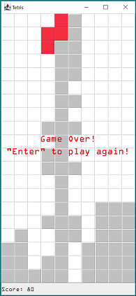
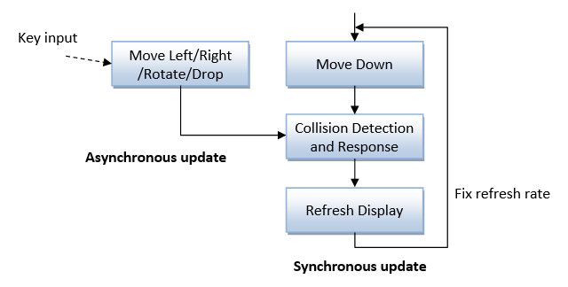
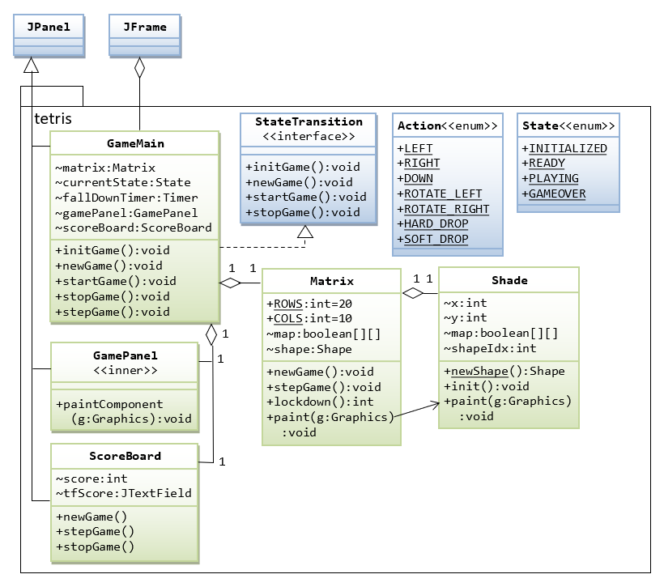

Introduction
Reference: https://tetris.com/
Terminology
- Matrix: The game board.
- Tetriminos (or Tetromino or Mino or Shapes or block): The iconic shapes, including the O, I, T, L, J, S, Z shapes. Tetriminos fall from the top of the matrix, and the player turns and moves them into their desired places at the bottom.
- Lock Down: When a tetrimino is put into a position where it is no longer moveable. There is a few millisecond for the player to move the shapes on the bottom row before it is secured.
- Line Clear: The acts of completely filling a row (or rows) and having it removed from the Matrix.
- "Tetris" Line Clear: Using the I-shape to clear 4 rows at the same time (awarded a lot of points).
- Hard Drop: ?
- Soft Drop: ?
- T Spin: ?
- Combo: ?
Scoring System
The scores are:
- Single line clear: 40
- Double line clear: 100
- Triple line clear: 300
- Tetris line clear (4 lines with a I-shape): 1200
Design
Timing and Event Handling
Below is the timing diagram:
- At a constant interval, the block shall move down by one row. This can be easily implemented via
javax.swing.Timer. - If UP, DOWN, or ROTATE key is pressed, the block shall react immediately (ignore the time interval). After the move, the move-down timer restart (To check: restart or resume the delay?).
State Diagram
This state diagram is partially implemented, having states INITIALIZED, PLAYING and GAMEOVER.

Design Notes
- Lock down delay: when a block reaches the bottom, there is a small delay for the user to move left/right before the block is locked down and converted.
- The "drop" shall be implemented as repeated "fast-down" for better visual, and to allow user to alter the course during the drop.
Implementation
Class Diagram
Enum State.java
package tetris;
/**
* The State enumeration defines the various states of the game.
* See "State diagram".
*/
public enum State {
INITIALIZED, READY, PLAYING, GAMEOVER
}Enum Action.java
package tetris;
/**
* The Action enumeration contains all the permissible actions of a block (shape).
*/
public enum Action {
DOWN, LEFT, RIGHT, ROTATE_LEFT, ROTATE_RIGHT, HARD_DROP, SOFT_DROP
}Class Shape.java
package tetris;
import java.awt.Color;
import java.awt.Graphics;
import java.util.Random;
/**
* The Shape class models the falling blocks (or Tetrimino) in the Tetris game.
* This class uses the "Singleton" design pattern. To get a new (random) shape,
* call static method Shape.newShape().
*
* A Shape is defined and encapsulated inside the Matrix class.
*/
public class Shape {
// == Define named constants ==
/** The width and height of a cell of the Shape (in pixels) */
public final static int CELL_SIZE = 32;
// == Singleton Pattern: Get an instance via Shape.newShape() ==
// Singleton instance (class variable)
private static Shape shape;
// Private constructor, cannot be called outside this class
private Shape() { }
// == Define Shape's properties ==
// A shape is defined by a 2D boolean array map, with its
// top-left corner at the (x, y) of the Matrix.
// All variables are "package" visible
// Property 1: Top-left corner (x, y) of this Shape on the Matrix
int x, y;
// Property 2: Occupancy map
boolean[][] map;
// Property 3: The rows and columns for this Shape. Although they can be obtained
// from map[][], they are defined here for efficiency.
int rows, cols;
// Property 4: Array index for colors and maps
int shapeIdx;
// For ease of undo rotation, the original map is saved here.
private boolean[][] mapSaved = new boolean[5][5];
// All the possible shape maps
// Use square array 3x3, 4x4, 5x5 to facilitate rotation computation.
private static final boolean[][][] SHAPES_MAP = {
{{ false, true, false },
{ true, true, false },
{ true, false, false }}, // Z
{{ false, true, false},
{ false, true, false},
{ false, true, true }}, // L
{{ true, true },
{ true, true }}, // O
{{ false, true, false },
{ false, true, true },
{ false, false, true }}, // S
{{ false, true, false, false },
{ false, true, false, false },
{ false, true, false, false },
{ false, true, false, false }}, // I
{{ false, true, false},
{ false, true, false},
{ true, true, false}}, // J
{{ false, true, false },
{ true, true, true },
{ false, false, false }}}; // T
// Each shape has its own color
private static final Color[] SHAPES_COLOR = {
new Color(245, 45, 65), // Z (Red #F52D41)
Color.ORANGE, // L
Color.YELLOW, // O
Color.GREEN, // S
Color.CYAN, // I
new Color(76, 181, 245), // J (Blue #4CB5F5)
Color.PINK // T (Purple)
};
// For generating new random shape
private static final Random rand = new Random();
/**
* Static factory method to get a newly initialized random
* singleton Shape.
*
* @return the singleton instance
*/
public static Shape newShape() {
// Create object if it's not already created
if(shape == null) {
shape = new Shape();
}
// Initialize a new "random" shape by position at the top row, centered.
// Update x, y, shapeIdx, map, rows and cols.
// Choose a pattern randomly
shape.shapeIdx = rand.nextInt(SHAPES_MAP.length);
// Set this shape's pattern. No need to copy the contents
shape.map = SHAPES_MAP[shape.shapeIdx];
shape.rows = shape.map.length;
shape.cols = shape.map[0].length;
// Set this shape initial (x, y) at the top row, centered.
shape.x = ((Matrix.COLS - shape.cols) / 2);
// Find the initial y position. Need to handle rotated L and J
// with empty top rows, i.e., initial y can be 0, -1, -2,...
outerloop:
for (int row = 0; row < shape.rows; row++) {
for (int col = 0; col < shape.cols; col++) {
// Ignore empty rows, by checking the row number
// of the first occupied square
if (shape.map[row][col]) {
shape.y = -row;
break outerloop;
}
}
}
return shape; // return the singleton object
}
/**
* Rotate the shape clockwise by 90 degrees.
* Applicable to square matrix.
*
* <pre>
* old[row][col] new[row][col]
* (0,0) (0,1) (0,2) (2,0) (1,0) (0,0)
* (1,0) (1,1) (1,2) (2,1) (1,1) (0,1)
* (2,0) (2,1) (2,2) (2,2) (1,2) (0,2)
*
* new[row][col] = old[numCols-1-col][row]
* </pre>
*/
public void rotateRight() {
// Save the current map before rotate for quick undo if collision detected
// (instead of performing an inverse rotate).
for (int row = 0; row < rows; row++) {
for (int col = 0; col < cols; col++) {
mapSaved[row][col] = map[row][col];
}
}
// Do the rotation on this map
// Rows must be the same as columns (i.e., square)
for (int row = 0; row < rows; row++) {
for (int col = 0; col < cols; col++) {
map[row][col] = mapSaved[cols - 1 - col][row];
}
}
}
/**
* Rotate the shape anti-clockwise by 90 degrees.
* Applicable to square matrix.
*
* <pre>
* old[row][col] new[row][col]
* (0,0) (0,1) (0,2) (0,2) (1,2) (2,2)
* (1,0) (1,1) (1,2) (0,1) (1,1) (2,1)
* (2,0) (2,1) (2,2) (0,0) (1,0) (2,0)
*
* new[row][col] = old[col][numRows-1-row]
* </pre>
*/
public void rotateLeft() {
// Save the current map before rotate for quick undo if collision detected
// (instead of performing an inverse rotate).
for (int row = 0; row < rows; row++) {
for (int col = 0; col < cols; col++) {
mapSaved[row][col] = map[row][col];
}
}
// Do the rotation on this map
// Rows must be the same as columns (i.e., square)
for (int row = 0; row < rows; row++) {
for (int col = 0; col < cols; col++) {
map[row][col] = mapSaved[col][rows-1-row];
}
}
}
/**
* Undo the rotate, due to move not allowed.
*/
public void undoRotate() {
// Restore the array saved before the move
for (int row = 0; row < rows; row++) {
for (int col = 0; col < cols; col++) {
map[row][col] = mapSaved[row][col];
}
}
}
/**
* Paint itself via the Graphics object.
* Since Shape is encapsulated in Matrix, shape.paint(Graphics)
* shall be called in matrix.paint(Graphics).
*
* @param g - the drawing Graphics object
*/
public void paint(Graphics g) {
int yOffset = 1; // Apply a small Y_OFFSET for nicer display?!
g.setColor(SHAPES_COLOR[this.shapeIdx]);
for (int row = 0; row < rows; row++) {
for (int col = 0; col < cols; col++) {
if (map[row][col]) {
g.fill3DRect((x+col)*CELL_SIZE, (y+row)*CELL_SIZE+yOffset,
CELL_SIZE, CELL_SIZE, true);
}
}
}
}
}Class Matrix.java
package tetris;
import java.awt.Color;
import java.awt.Graphics;
/**
* The Matrix class models the Tetris Game Board (called matrix)
* that holds one falling block (shape).
*/
public class Matrix implements StateTransition {
// == Define named constants ==
/** Number of rows of the matrix */
public final static int ROWS = 20;
/** Number of columns of the matrix */
public final static int COLS = 10;
/** The width and height of a cell of the Shape (in pixels) */
public final static int CELL_SIZE = Shape.CELL_SIZE;
private static final Color COLOR_OCCUPIED = Color.LIGHT_GRAY;
private static final Color COLOR_EMPTY = Color.WHITE;
// == Define Matrix's properties ==
// Property 1: The game board (matrix) is defined by a 2D boolean array map.
boolean map[][] = new boolean[ROWS][COLS];
// Property 2: The board has ONE falling shape
Shape shape;
/**
* Constructor
*/
public Matrix() { }
/**
* Reset the matrix for a new game, by resetting all the properties.
* Clear map[][] and get a new random Shape.
*/
@Override
public void newGame() {
// Clear the map
for (int row = 0; row < ROWS; row++) {
for (int col = 0; col < COLS; col++) {
map[row][col] = false; // empty
}
}
// Get a new random shape
shape = Shape.newShape();
}
/**
* The shape moves on the given action (left, right, down, rotate).
* @return true if it is at the bottom and cannot move down further.
* Need to lock down this block.
*/
public boolean stepGame(Action action) {
switch (action) {
case LEFT:
shape.x--; // try moving
if (!actionAllowed()) shape.x++; // undo the move
break;
case RIGHT:
shape.x++;
if (!actionAllowed()) shape.x--; // undo the move
break;
case ROTATE_LEFT:
shape.rotateLeft();
if (!actionAllowed()) shape.undoRotate(); // undo the move
break;
case ROTATE_RIGHT:
shape.rotateRight();
if (!actionAllowed()) shape.undoRotate(); // undo the move
break;
case HARD_DROP: // Handle as FAST "down" in GameMain class for better visual
case SOFT_DROP: // Handle as FAST "down" in GameMain class for better visual
// do {
// shape.y++;
// } while (moveAllowed());
// shape.y--;
// break;
case DOWN:
shape.y++;
if (!actionAllowed()) {
// At bottom, cannot move down further. To lock down this block
shape.y--; // undo the move
return true;
}
break;
}
return false; // not reach the bottom
}
/**
* Check if the shape moves outside the matrix,
* or collide with existing shapes in the matrix.
* @return true if this move action is allowed
*/
public boolean actionAllowed() {
for (int shapeRow = 0; shapeRow < shape.rows; shapeRow++) {
for (int shapeCol = 0; shapeCol < shape.cols; shapeCol++) {
int matrixRow = shapeRow + shape.y;
int matrixCol = shapeCol + shape.x;
if (shape.map[shapeRow][shapeCol]
&& (matrixRow < 0 || matrixRow >= Matrix.ROWS
|| matrixCol < 0 || matrixCol >= Matrix.COLS
|| this.map[matrixRow][matrixCol])) {
return false;
}
}
}
return true;
}
/**
* Lock down the block, by transfer the block's content to the matrix.
* Also clear filled lines, if any.
* @return the number of rows removed in the range of [0, 4]
*/
public int lockDown() {
// Block at bottom, lock down by transferring the block's content
// to the matrix
for (int shapeRow = 0; shapeRow < shape.rows; shapeRow++) {
for (int shapeCol = 0; shapeCol < shape.cols; shapeCol++) {
if (shape.map[shapeRow][shapeCol]) {
this.map[shapeRow + shape.y][shapeCol + shape.x] = true;
}
}
}
// Process the filled row(s) and update the score
return clearLines();
}
/**
* Process the filled rows in the game board and remove them.
* The filled rows need not be at the bottom.
*
* @return the number of rows removed in the range of [0, 4]
*/
public int clearLines() {
// Starting from the last rows, check if a row is filled if so, move down
// the occupied square. Need to check all the way to the top-row
int row = ROWS - 1;
int rowsRemoved = 0;
boolean removeThisRow;
while (row >= 0) {
removeThisRow = true;
for (int col = 0; col < COLS; col++) {
if (!map[row][col]) {
removeThisRow = false;
break;
}
}
if (removeThisRow) {
// delete the row by moving down the occupied slots.
for (int row1 = row; row1 > 0; row1--) {
for (int col1 = 0; col1 < COLS; col1++) {
map[row1][col1] = map[row1 - 1][col1];
}
}
rowsRemoved++;
// The top row shall be empty now.
for (int col = 0; col < COLS; col++)
map[0][col] = false;
// No change in row number. Check this row again (recursion).
} else {
// next row on top
row--;
}
}
return rowsRemoved;
}
/**
* Paint itself via the Graphics context.
* The JFrame's repaint() in GameMain class callbacks paintComponent(Graphics)
* This shape.paint(Graphics) shall be placed in paintComponent(Graphics).
* @param g - the drawing Graphics object
*/
public void paint(Graphics g) {
int yOffset = 1; // apply a small y offset for nicer display?!
for (int row = 0; row < ROWS; row++) {
for (int col = 0; col < COLS; col++) {
g.setColor(map[row][col] ? COLOR_OCCUPIED : COLOR_EMPTY);
g.fill3DRect(col*CELL_SIZE, row*CELL_SIZE+yOffset,
CELL_SIZE, CELL_SIZE, true);
}
}
// Also paint the Shape encapsulated
shape.paint(g);
}
}The Main Class GameMain.java
This is your assignment! You need to work it out yourself, based on the Snake's GameMain.
Adding Controls, Images, and Sound Effect
See Snake Game.
REFERENCES & RESOURCES